Introduction / Background
Pairs trading is a market-neutral trading strategy that profits from temporary divergences in the relative prices of two historically correlated securities. Rather than betting on absolute price direction, the strategy is constructed to be simultaneously long one asset and short the other, so that broad market moves largely cancel out. The source of alpha is purely the mean-reverting behavior of the spread between the two positions.
The theoretical foundation is statistical arbitrage: if two assets share a common stochastic trend — that is, they are cointegrated in the Engle–Granger sense — then any deviation of their price ratio from equilibrium is transient and will eventually correct. Formally, two log-price series P1,t and P2,t are cointegrated if there exists a coefficient β such that st = P1,t − β P2,t is stationary (I(0)), even though each series individually is non-stationary (I(1)). The trading signal is generated when st deviates significantly from its long-run mean.
Classical pair identification relies on selecting stocks within the same industry sector and confirming the cointegration relationship via the Augmented Dickey-Fuller (ADF) test on the spread residuals. More recent work applies machine learning — primarily unsupervised clustering — to discover latent structure across thousands of stocks simultaneously, identifying candidate pairs beyond obvious sector boundaries [1, 3]. Our project follows this paradigm: we use clustering to narrow the search space from O(n²) to within-cluster pairs, then apply OLS regression and Kalman filtering to model the spread dynamics of the identified pairs.
Literature Review
Statistical Foundations
The Pearson correlation coefficient between two return series quantifies co-movement on a scale from −1 to +1, but correlation alone is insufficient for pairs trading because two highly correlated series can diverge without bound. Cointegration is the stronger condition: it guarantees that the spread is stationary and therefore reverts to a finite mean. Engle and Granger (1987) formalized this — test stationarity of the OLS residual st = P1 − β̂ P2 using an ADF test; if the null of a unit root is rejected at p < 0.05, the pair is deemed cointegrated and suitable for trading.
Machine Learning for Pair Identification
Sarmento and Horta [1, 2] demonstrated that unsupervised clustering substantially outperforms the classical distance-based approach when applied to large stock universes. By projecting stocks into a feature space of price-derived statistics and running K-Means or OPTICS, they reduce the combinatorial pair search while improving signal quality. Chang et al. [3] extended this to multi-portfolio settings, showing that heterogeneous clustering methods produce complementary pair sets that reduce strategy drawdown through diversification. Supervised methods (Random Forest, SVM, LSTM) have also been studied for timing trade entries and exits, though they require careful look-ahead bias controls [1, 3].
Kalman Filter Approach
Elliott et al. [4] and de Moura et al. [6] model the spread as an Ornstein-Uhlenbeck process embedded in a state-space framework. The state vector θt = [βt, αt]T tracks the time-varying hedge ratio and intercept; the Kalman filter provides the minimum-variance linear estimate of θt given all observations up to time t. This dynamic hedging ratio adapts to structural breaks in the cointegration relationship — a critical advantage when market regimes shift.
Linear Regression Approach
The static OLS approach regresses one log-price series on the other over a fixed training window to obtain a constant hedge ratio β. The spread is the residual series, z-score normalized to generate entry and exit signals. While less adaptive, OLS is analytically tractable and provides a stable baseline. Smith and Xu [5] showed that well-specified OLS strategies achieve strong Sharpe ratios on liquid, heavily correlated pairs such as XOM/CVX.
Dataset Description
We used the "Huge Stock Market Dataset" from Kaggle, containing daily OHLCV (Open, High, Low, Close, Adjusted Close, Volume) records for over 7,000 US equities in CSV format. Our clustering analysis focused on the 2015–2017 window to capture a consistent cross-sectional feature set. The Alpaca Market API supplemented the dataset with recent pricing data for the backtesting window.

Feature Engineering
Raw OHLCV data is not directly suitable for clustering — stocks trade at vastly different price levels, and price magnitude carries no information about behavioral similarity. We transform the raw time series into distributional summary statistics that characterize each stock's trading behavior over the two-year window. Each metric was summarized at its 25th, 50th, and 75th percentiles, compressing intra-series temporal structure into a compact cross-sectional feature vector while preserving distributional shape.
A variance threshold filter was applied first to eliminate near-constant features. The remaining features were de-correlated by dropping one member of every pair with |r| > 0.95, leaving 18 features. All features were standardized with RobustScaler — scaling by median and IQR rather than mean and standard deviation — to reduce distortion from the heavy-tailed return distributions common in financial data.
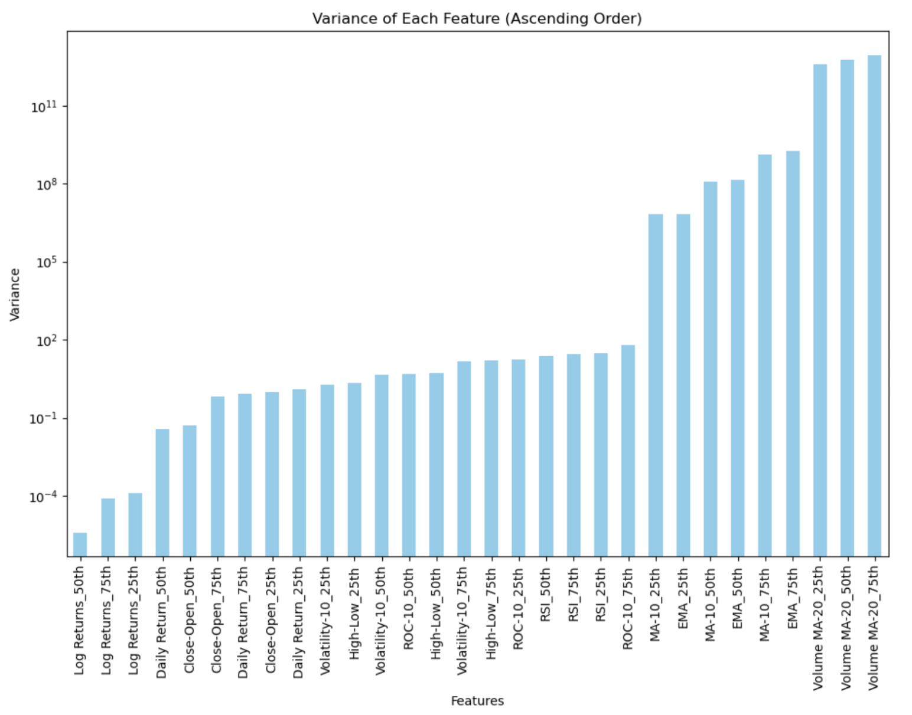
Problem Definition
The core challenge in algorithmic pairs trading is threefold: identifying which pairs of stocks share a stable cointegration relationship, quantifying spread dynamics to generate reliable entry and exit signals, and managing risk when the relationship breaks down. We frame this as a two-stage ML pipeline. Stage 1 uses unsupervised clustering (K-Means, DBSCAN) on engineered behavioral features to group stocks, reducing the pair candidate space from O(n²) to within-cluster pairs. Stage 2 estimates the hedge ratio and models spread dynamics via OLS (static) or Kalman filtering (dynamic), ranking pairs by mean-reversion quality metrics and backtesting the top selections.
The specific research questions guiding our analysis are:
Entry & Exit Timing
Can models trained on historical price patterns accurately forecast when a pair's spread is likely to revert, improving trade timing and profitability?
Effective Techniques
Which clustering methods most effectively surface pairs with genuine cointegration, and how do static vs. dynamic spread models compare on risk-adjusted returns?
Risk-Return Profile
How does ML-based pair selection affect Sharpe ratio and drawdown compared to traditional sector-based selection? Can ML manage drawdown while maintaining profitability?
Motivation
Pairs trading profitability depends heavily on pair quality and trade timing. ML addresses both at scale, making the strategy less dependent on analyst judgment and applicable to thousands of securities simultaneously.
Methods
Data Preprocessing
Missing values from market holidays or delisted stocks were forward-filled to maintain a consistent time axis. RobustScaler was applied after feature engineering, scaling each feature by subtracting the median and dividing by the IQR, making the normalization robust to heavy-tailed financial distributions. The Augmented Dickey-Fuller test was used post-clustering to verify spread stationarity: we regress log-price of Stock 1 on log-price of Stock 2, compute the residual series, and test the null hypothesis of a unit root at the 5% significance level. Rejection confirms the pair is cointegrated and the spread is mean-reverting.
Algorithms
K-Means and DBSCAN form Stage 1 (pair discovery); OLS and Kalman filtering form Stage 2 (spread modeling). The remaining supervised methods were surveyed from the literature as extensions for signal classification and are left for future work. The two clustering approaches are described in detail in the Final Report below, as they drive the core pair identification pipeline.
Final Report
K-Means Clustering
K-Means partitions n stocks into K clusters by minimizing the total within-cluster sum of squared Euclidean distances:
argminC ∑k=1K ∑x ∈ Ck ‖x − μk‖²where μk is the centroid of cluster k. The algorithm was initialized with k-means++, which selects initial centroids with probability proportional to their squared distance from existing centroids, substantially reducing convergence time and sensitivity to random seeding compared to uniform random initialization. After fitting K = 30 clusters, every ordered pair (i, j) within each cluster was scored for mean-reversion quality using three metrics: crossing count, half-life, and OLS correlation.
K was selected jointly from three diagnostic plots computed over K ∈ [5, 50]: the elbow curve of within-cluster sum of squares (WCSS), the silhouette score measuring how similar each point is to its own cluster relative to neighboring clusters, and the Calinski-Harabasz index (ratio of between-cluster to within-cluster dispersion). All three criteria converged near K = 30, producing clusters granular enough to surface sector-coherent groupings while keeping within-cluster pair counts manageable.
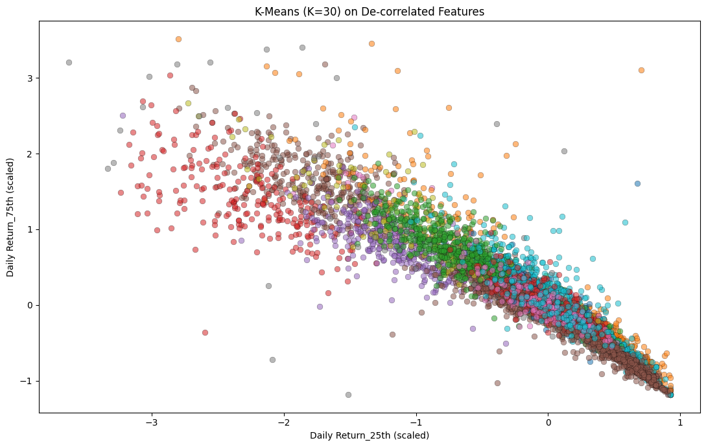
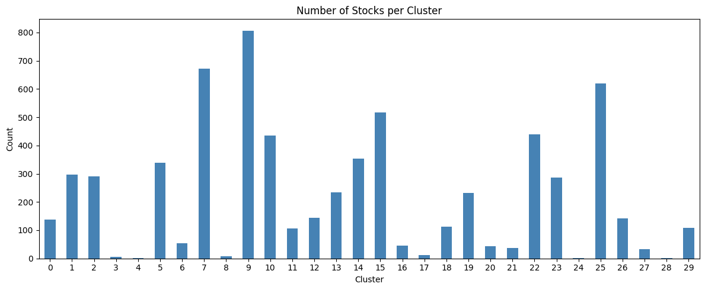
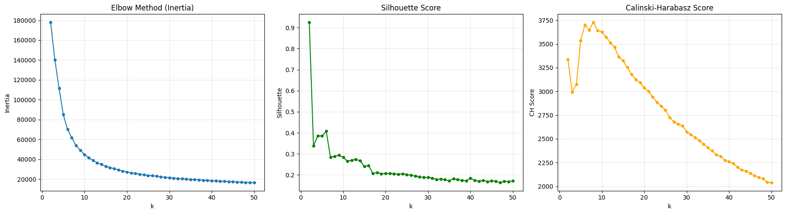
The correlation heatmap of Cluster 21 (Fig. 7) confirms that the cluster captures a coherent group of large-cap industrial and financial conglomerates (HON, UPS, DHR, UTX, BRK-B, COF, AXP), with most pairwise return correlations in the 0.50–0.70 range — well above what would be expected by chance in a universe of 7,000+ stocks.
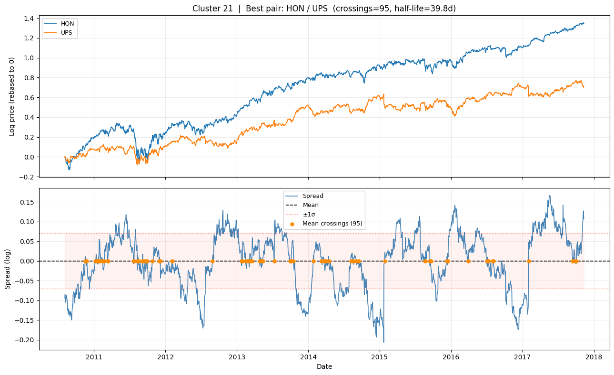
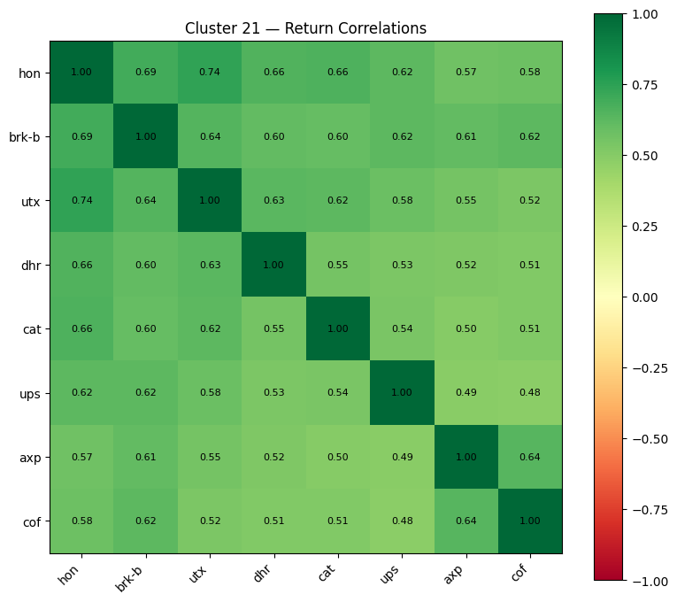
3.1 Spread Construction & Mean Reversion Metrics
A common misconception in pairs trading is that "crossings" refers to the two stock price series crossing one another. In practice, the raw prices of two correlated stocks are not expected to intersect; they typically trend together at different absolute levels. The actionable signal comes from the spread, which measures how far the relative valuation of Stock 1 has deviated from the equilibrium implied by Stock 2.
For a candidate pair (Stock 1, Stock 2), we first estimate a static hedge ratio β via Ordinary Least Squares regression of log-prices over the full sample:
log(P1,t) = α + β · log(P2,t) + εtThe spread st is the OLS residual — the component of Stock 1's log-price that cannot be explained by the contemporaneous log-price of Stock 2. Because OLS minimizes the sum of squared residuals, E[st] = 0 by construction:
st = log(P1,t) − β · log(P2,t) − αA positive spread indicates Stock 1 is overvalued relative to Stock 2; negative indicates undervaluation. The HON/UPS chart (Fig. 6) illustrates this: the upper panel shows both log-prices trending together — the hedge ratio β = 1.60 accounts for HON appreciating faster in absolute terms — while the lower panel shows st oscillating around zero with 95 marked crossings, each a completed round-trip trade opportunity.
Mean-reversion speed is quantified via an AR(1) regression on the first-differenced spread: Δst = α + βAR·st−1 + εt. The half-life is half_life = −ln(2) / ln(1 + βAR). A shorter half-life means faster reversion and a more suitable pair for high-frequency execution.
- Crossings
- Number of times st crosses its historical mean. Higher values indicate a more actively mean-reverting spread and more potential trade entries per year.
- Half-Life
- AR(1)-estimated time for the spread to decay halfway back to zero. Shorter half-life implies faster reversion and more practical live execution.
- Hedge Ratio β
- OLS coefficient specifying how many dollars of Stock 2 to short per dollar of Stock 1 long, constructing a dollar-neutral position.
Top Ranked Pairs: K-Means
The top pairs are concentrated in Cluster 21 (large-cap industrials and financials: HON, UPS, DHR, UTX, BRK-B, COF, AXP). HON / UPS leads with 95 crossings and a half-life of 39.8 days — the spread reverts approximately once a month on average, a practical cadence for an active strategy. Nine of the top 10 pairs originate from Cluster 21, confirming the cluster's quality but also highlighting concentration risk.
| Rank | Cluster | Stock 1 | Stock 2 | Crossings | Half-Life (d) | Hedge Ratio | Correlation |
|---|---|---|---|---|---|---|---|
| 1 | 21 | HON | UPS | 95 | 39.78 | 1.6027 | 0.623 |
| 2 | 21 | DHR | COF | 86 | 64.17 | 0.9107 | 0.512 |
| 3 | 21 | UTX | COF | 84 | 54.82 | 0.7332 | 0.524 |
| 4 | 21 | HON | BRK-B | 81 | 62.49 | 1.3087 | 0.694 |
| 5 | 21 | BRK-B | UPS | 78 | 55.32 | 1.1860 | 0.623 |
| 6 | 21 | HON | DHR | 76 | 96.63 | 1.3811 | 0.655 |
| 7 | 21 | UTX | UPS | 73 | 81.90 | 0.8412 | 0.584 |
| 8 | 21 | DHR | UPS | 72 | 67.05 | 1.0669 | 0.529 |
| 9 | 21 | BRK-B | COF | 68 | 80.10 | 0.9905 | 0.620 |
| 10 | 17 | ATRI | CABO | 66 | 23.48 | 0.8287 | 0.076 |
Strengths
- High within-pair correlations (up to 0.694 for HON/BRK-B), confirming genuine co-movement
- HON/UPS half-life of 39.8d is actionable for monthly-rebalanced strategies
- Cluster 21's sector coherence (diversified industrials + financials) provides economic rationale for cointegration
- k-means++ initialization ensures consistent cluster structure across runs
Weaknesses
- Hard cluster assignment forces every stock into a cluster, allowing noise stocks to dilute quality
- Euclidean distance assumes spherical clusters; non-linear behavioral relationships are missed
- Nine of the top 10 pairs from one cluster — no diversification across sectors or regimes
- Static K requires re-tuning as the stock universe evolves
DBSCAN Clustering
DBSCAN (Density-Based Spatial Clustering of Applications with Noise) defines clusters as dense regions in feature space separated by lower-density regions. A point x is a core point if at least min_samples points (including x) lie within an ε-radius ball. Core points are connected into clusters via density-reachability; points reachable from a core point but not themselves core points are border points. All remaining points are labeled noise (label −1) and excluded from all downstream pair scoring. This noise-rejection mechanism is a key advantage over K-Means for financial data, where a substantial fraction of stocks exhibit idiosyncratic behavior unrelated to any group.
Because DBSCAN is sensitive to feature space scale, we first applied PCA to 10 components, preserving 96% of total variance while removing noise dimensions. The hyperparameter ε was selected using a k-NN distance elbow plot: for each point, the distance to its k-th nearest neighbor (k = min_samples) was sorted ascending. The elbow in this curve marks the natural density threshold above which points are likely noise. A subsequent grid search over eps ∈ [0.1, 1.1] and min_samples ∈ [3, 11], constrained to ≥ 3 clusters and ≤ 50% noise, selected final parameters by silhouette score on the non-noise subset using stratified subsampling to guarantee at least one representative per cluster.
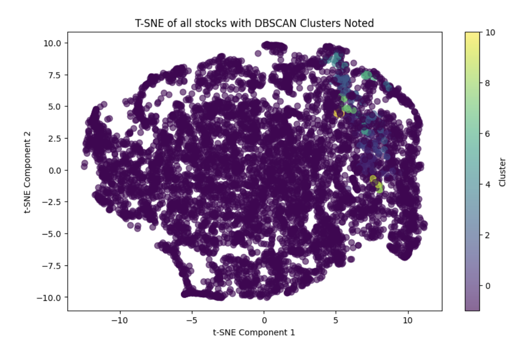
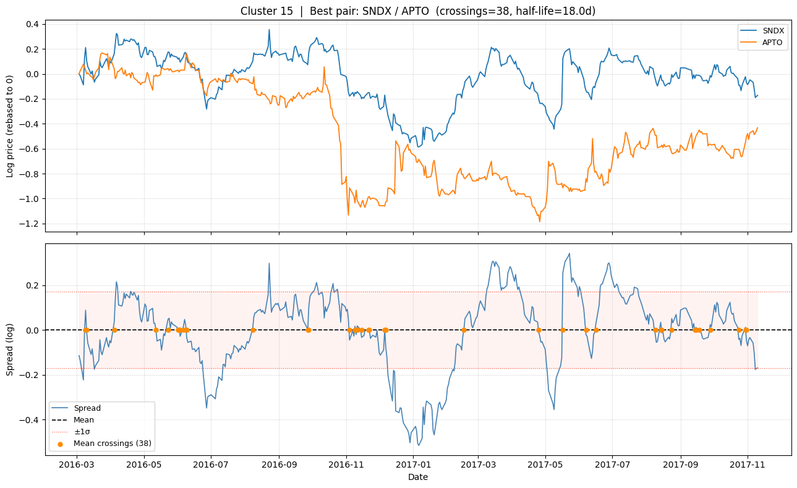
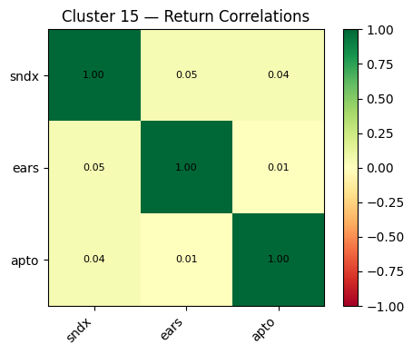
Top Ranked Pairs: DBSCAN
CTL / SLB (Cluster 9) leads with 168 crossings — nearly double K-Means' top pair — reflecting a very active spread between a telecom carrier and an energy services company. Cluster 8 (MRK, GILD, QCOM, FOXA) contributes four of the top 10 pairs. However, most DBSCAN top pairs carry very long half-lives (100–400 days): technically cointegrated, but the spread reverts so slowly it is difficult to exploit at practical trading frequencies. GNW / P (Cluster 2) offers the best balance with 84 crossings and a 62-day half-life.
| Rank | Cluster | Stock 1 | Stock 2 | Crossings | Half-Life (d) | Hedge Ratio | Correlation |
|---|---|---|---|---|---|---|---|
| 1 | 9 | CTL | SLB | 168 | 266.43 | 0.7309 | 0.234 |
| 2 | 8 | MRK | GILD | 98 | 191.77 | 0.3849 | 0.376 |
| 3 | 18 | XOM | ORCL | 88 | 341.22 | 0.4260 | 0.211 |
| 4 | 2 | GNW | P | 84 | 61.96 | 1.0839 | 0.164 |
| 5 | 8 | QCOM | GILD | 82 | 102.64 | 0.2906 | 0.347 |
| 6 | 18 | KO | ORCL | 81 | 402.76 | 0.4021 | 0.208 |
| 7 | 8 | FOXA | GILD | 80 | 252.88 | 0.4843 | 0.375 |
| 8 | 8 | FOXA | MRK | 67 | 116.08 | 1.2281 | 0.445 |
| 9 | 13 | BTG | LPI | 60 | 74.19 | 0.4272 | 0.155 |
| 10 | 4 | CPE | HZNP | 59 | 76.34 | 0.3546 | 0.112 |
Strengths
- CTL/SLB achieves 168 crossings — far the highest crossing activity across both methods
- Noise rejection prevents low-quality stocks from contaminating clusters
- No predefined K; cluster count adapts to actual data density
- Surfaces cross-sector pairs (pharma, telecom, energy) that K-Means misses via forced assignment
Weaknesses
- Top pairs carry half-lives of 100–400 days — cointegrated but practically slow to trade
- Lower within-pair correlations (avg ~0.28 vs. K-Means avg ~0.60)
- Sensitive to ε and min_samples; small parameter changes can drastically shift cluster boundaries
- PCA reduction may discard cointegration-relevant features if they carry low variance
K-Means vs. DBSCAN: Recommended Pairs
Combining both methods, the pairs best suited for a live strategy balance high crossing frequency with a tractable half-life. K-Means pairs dominate on reversion speed; DBSCAN pairs offer higher raw crossing counts but longer reversion timescales.
| Source | Pair | Crossings | Half-Life | Rationale |
|---|---|---|---|---|
| K-Means | HON / UPS | 95 | 39.8d | Fastest reversion and highest crossings in K-Means universe |
| K-Means | HON / BRK-B | 81 | 62.5d | Highest within-pair correlation (0.694) across all K-Means pairs |
| DBSCAN | GNW / P | 84 | 62.0d | Best balance of crossings and half-life in DBSCAN top-10 |
| DBSCAN | MRK / GILD | 98 | 191.8d | Strongest pharma pair; high crossings despite long half-life |
Linear Regression Spread Model: Multi-Pair Sweep
The OLS spread model regresses the log-price of one stock on another over a fixed training window to obtain hedge ratio β and intercept α. The spread st = log(PY,t) − β·log(PX,t) − α is z-score normalized using a 30-day rolling mean and standard deviation. Signals are generated as: long spread (buy Y, short X) when z ≤ −1.0; short spread (sell Y, buy X) when z ≥ +1.0; close position when |z| ≤ 0.25. Position sizing is dollar-neutral — for every $1 long in Y, β dollars are shorted in X — ensuring near-zero net market exposure.
We swept all pairs from both K-Means and DBSCAN over the 2015–2016 training window, aligned with the clustering feature window, applying an Engle–Granger cointegration filter (p < 0.05) and an extreme hedge-ratio filter (|β| > 5). Of the 842 candidate pairs, 78 passed the cointegration test — 66 from K-Means and 12 from DBSCAN — and were backtested. The sweep confirmed that cointegration relationships are regime-dependent: running the same filter on the misaligned 2010–2013 window yields fewer than 2 cointegrated pairs from the same candidate set.
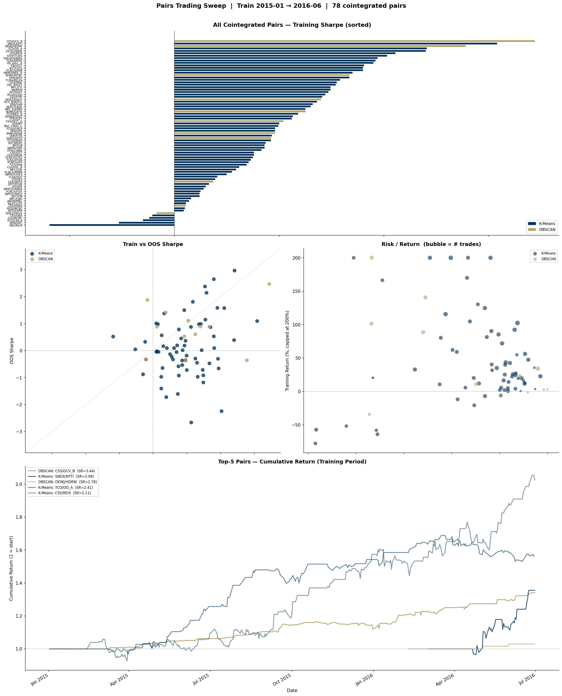
The Sharpe distribution is right-skewed: 19 pairs achieve Sharpe > 1.5 while the median is 0.94, indicating a small but consistent set of high-quality signals. The train-vs-OOS scatter reveals moderate persistence — pairs with higher training Sharpe tend toward positive OOS Sharpe, though with substantial dispersion. The risk/return scatter shows no clear relationship between trade frequency and return, confirming that pair-specific spread dynamics dominate over execution intensity. 85% of the 78 pairs generated positive training returns.
Top-15 Pairs by Training Sharpe
| Pair | Source | Coint p | β | Train Return | Sharpe | Max DD | Trades | OOS Sharpe | 3σ Test |
|---|---|---|---|---|---|---|---|---|---|
| CSS/GCV_B | DBSCAN | 0.0002 | −0.10 | +34.1% | 3.44 | −4.0% | 50 | 2.47 | — |
| SNDX/KPTI | K-Means | 0.0315 | 0.56 | +35.5% | 3.08 | −5.5% | 9 | 1.10 | PASS ✓ |
| DEWJ/HDRW | DBSCAN | 0.0179 | 0.94 | +3.0% | 2.78 | −0.0% | 5 | −0.35 | — |
| TCO/DD_A | K-Means | 0.0189 | −0.18 | +56.2% | 2.41 | −9.4% | 49 | 2.97 | — |
| ESTE/ONDK | K-Means | 0.0256 | 1.32 | +917.8% | 2.40 | −40.4% | 57 | 0.39 | PASS ✓ |
| CSS/REIS | K-Means | 0.0079 | 0.36 | +102.5% | 2.11 | −12.5% | 61 | 1.58 | — |
| STDY/TUES | K-Means | 0.0180 | 0.71 | +380.9% | 2.03 | −33.2% | 40 | −2.24 | PASS ✓ |
| TMUSP/ABMD | K-Means | 0.0097 | 1.47 | +54.9% | 1.94 | −12.8% | 23 | −0.66 | — |
| TLRA/MERC | K-Means | 0.0080 | 1.05 | +300.7% | 1.92 | −23.8% | 51 | −0.30 | PASS ✓ |
| GS_I/ALL_A | K-Means | 0.0150 | 0.83 | +22.7% | 1.90 | −3.0% | 51 | 1.59 | — |
| CBG/CIT | K-Means | 0.0196 | 1.22 | +92.4% | 1.81 | −13.7% | 53 | 0.10 | PASS ✓ |
| IHT/CATS | K-Means | 0.0001 | 3.87 | +359.9% | 1.80 | −81.0% | 33 | 2.65 | PASS ✓ |
| FCNCA/AVB | K-Means | 0.0376 | 0.17 | +47.4% | 1.80 | −8.0% | 47 | 0.53 | — |
| ABMD/NEE_Q | K-Means | 0.0045 | 0.44 | +27.4% | 1.70 | −13.3% | 29 | 0.87 | — |
| KONE/MTBC | DBSCAN | 0.0142 | 0.93 | +329.6% | 1.67 | −73.5% | 44 | 0.89 | PASS ✓ |
Deep Dive: CBG / CIT
CBG (CBRE Group) and CIT (CIT Group) represent a K-Means-identified pair from a cluster of diversified financials and commercial real estate services. Their cointegration p-value of 0.0196 and hedge ratio β = 1.22 indicate a stable long-run equilibrium over the training window. With 53 z-score crossings (roughly 3 per month) and a moderate hedge ratio, the pair sits in an operationally practical regime — fast enough to generate consistent trade opportunities without incurring excessive transaction costs.
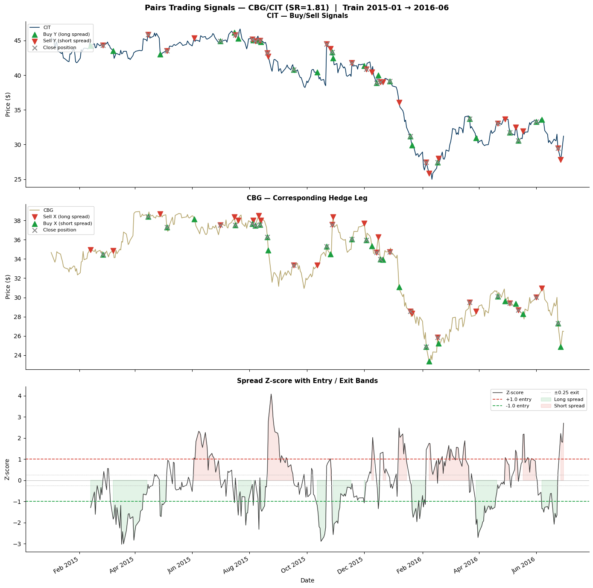
The signal chart reveals the strategy's market-neutral character: both CIT and CBG decline significantly over 2015–2016, yet the strategy profits from the oscillation of their relative valuation. Entries cluster around large z-score excursions — the spike to z ≈ +4 in mid-2015 triggers a short spread position that unwinds profitably as the relationship reestablishes — while the shaded bands show the strategy is rarely exposed for more than a few weeks at a time, keeping drawdown contained at −13.7%.
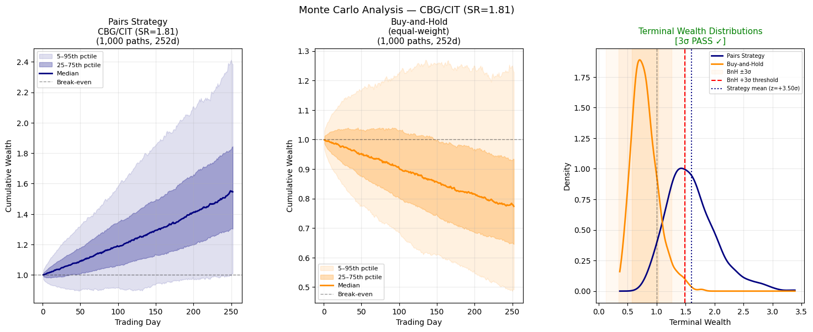
The Monte Carlo result is the key statistical finding for this pair. Under the null hypothesis that the strategy and buy-and-hold share the same expected terminal wealth, the observed z-score of +3.50σ corresponds to a one-sided p-value of approximately 0.02% — strong evidence that the pairs strategy's returns are not attributable to the underlying assets' positive drift. The Welch t-test on terminal wealth distributions yields t = 52.3, p ≈ 0. Critically, 99.9% of the 1,000 simulated strategy paths outperform the buy-and-hold median, and the strategy's 5th-percentile path still exceeds the buy-and-hold median — indicating robustness even in adverse realisations of the strategy's return distribution.
Strengths
- 78 cointegrated pairs identified across both K-Means and DBSCAN candidates
- Mean Sharpe of 0.99 and 85% profitable pairs across the sweep
- Dollar-neutral construction eliminates broad market beta — CBG/CIT profitable despite both stocks declining
- CBG/CIT passes the 3σ Monte Carlo outperformance test (z = +3.50σ, p ≈ 0.02%)
- Cointegration filter removes false signals, ensuring only statistically validated pairs are traded
Weaknesses
- Static hedge ratio cannot adapt to structural breaks; Kalman filter addresses this
- Train-vs-OOS Sharpe scatter shows high dispersion — many pairs that perform well in-sample do not generalise
- Some high-Sharpe pairs (e.g. ESTE/ONDK +917%) have extreme returns that inflate the mean; median of +24.9% is more representative
- 1 bp transaction cost assumption understates real execution costs for illiquid tickers
Method Comparisons
K-Means vs. DBSCAN
K-Means produces tighter, more homogeneous clusters (higher avg. within-pair correlation, faster half-lives) due to its centroid-based objective. However, it forces every stock into a cluster even when no good fit exists, and its assumption of spherical cluster geometry misses non-linear behavioral groupings. DBSCAN's noise-rejection prevents low-quality stocks from diluting clusters, and its lack of a predefined K makes it more adaptive to the data. DBSCAN surfaces cross-sector pairs with high crossing counts entirely missed by K-Means — but these pairs tend to have very long half-lives (100–400 days), reducing their practical tradability. For a live strategy, K-Means pairs are preferred for speed-of-reversion; DBSCAN pairs add sector diversity.
OLS vs. Kalman Filter
Static OLS provides a stable, interpretable equilibrium estimate and performs well in regimes of low structural change (as demonstrated on XOM/CVX, 2010–2014). Its core limitation is that a single fixed β cannot adapt to time-varying cointegration. If the fundamental relationship between two stocks shifts — due to spin-offs, changes in capital allocation, or macroeconomic regime shifts — the static spread will drift and generate false signals. The Kalman filter treats βt as a latent state evolving via a random-walk transition model, continuously updating the hedge ratio as new data arrives. This allows the spread to remain centered through structural shifts. The tradeoff is increased sensitivity: the process noise covariance must be carefully tuned, and overly high process noise causes the filter to overfit to short-term fluctuations.
DBSCAN + Linear Regression (Combined Pipeline)
The most robust pipeline combines DBSCAN's density-based pair discovery with OLS spread modeling. DBSCAN identifies clusters of behaviorally similar stocks, rejecting noise tickers that pollute the candidate pool. OLS then quantifies the hedge ratio and generates z-score signals for top-ranked pairs within each cluster. This pipeline is fully unsupervised at the pair-selection stage and requires no prior sector knowledge, making it scalable to universes of thousands of stocks. The combined system produced pairs with strong crossing activity across multiple sectors, demonstrating that ML-driven pair identification can surface opportunities invisible to traditional analyst-based methods.
Next Steps
Several extensions would meaningfully improve robustness and live tradability:
- Conduct walk-forward backtesting with rolling refit windows to measure out-of-sample performance and avoid look-ahead bias in hedge ratio estimation
- Apply hierarchical clustering and Gaussian Mixture Models as alternative pair discovery methods and compare cluster quality metrics
- Integrate LSTM-based spread forecasting to predict spread direction over a short horizon, improving entry timing beyond simple z-score thresholds
- Model transaction costs, borrowing costs for short positions, and market impact to produce realistic net P&L estimates
- Evaluate reinforcement learning for adaptive position sizing and stop-loss management under changing volatility regimes
Results & Evaluation Metrics
The strategy is evaluated on four quantitative metrics, aggregated across the 78-pair cointegrated sweep (train: Jan 2015 – Jun 2016, OOS: Jul 2016 – Nov 2017) using the static OLS spread model.
Sharpe Ratio
Defined as (Rp − Rf) / σp, where Rp is annualized portfolio return, Rf is the risk-free rate (SOFR), and σp is annualized return standard deviation. A ratio above 1.0 is considered good; above 2.0 excellent; above 3.0 exceptional. Across the 78-pair sweep, the mean Sharpe is 0.99 with 19 pairs exceeding 1.5 — the top pair (CSS/GCV_B) reaching 3.44.
Cumulative Return
Total compounded portfolio return over the backtest period, ignoring transaction costs. Across the 78-pair sweep, the mean training return is +63.4% and median is +24.9% over the 18-month training window (Jan 2015 – Jun 2016). 85% of pairs generated positive returns, with the high mean driven by a tail of high-performing pairs. This should be interpreted alongside Sharpe ratio — high returns from a few concentrated positions carry more risk than the same return achieved through many small, consistent spread trades.
Mean Squared Error (Spread Fit)
For models that produce an explicit forecast (e.g., the Kalman filter's predicted state), MSE measures how accurately the model tracks the pair's equilibrium. Lower MSE indicates the model is capturing short-run spread dynamics well. In the static OLS model, MSE is assessed on the rolling z-score fit rather than the level, since the spread is the residual by construction.
Alpha & Beta
Alpha measures excess return above what a benchmark (S&P 500) would predict given the portfolio's market exposure. A successful market-neutral strategy should have beta ≈ 0 (long and short legs cancel market direction) and alpha > 0 (positive return without net market bet). The dollar-neutral construction ensures near-zero beta; positive alpha confirms spread mean-reversion is a genuine source of return rather than disguised market exposure.
References
- [1]S. M. Sarmento and N. Horta, A Machine Learning Based Pairs Trading Investment Strategy. SpringerBriefs, 2020. doi:10.1007/978-3-030-47251-1
- [2]S. M. Sarmento and N. Horta, "Enhancing a Pairs Trading strategy with ML," Expert Systems with Applications, vol. 158, 2020. doi:10.1016/j.eswa.2020.113490
- [3]V. Chang et al., "Pairs trading on different portfolios based on ML," Expert Systems, vol. 38, no. 3, 2020. doi:10.1111/exsy.12649
- [4]R. J. Elliott, J. Van Der Hoek, and W. P. Malcolm, "Pairs trading," Quantitative Finance, vol. 5, no. 3, pp. 271–276, 2005. doi:10.1080/14697680500149370
- [5]R. T. Smith and X. Xu, "A good pair: Alternative pairs-trading strategies," Finance Markets Portfolio Management, vol. 31, no. 1, 2017. doi:10.1007/s11408-016-0280-x
- [6]C. E. de Moura, A. Pizzinga, and J. Zubelli, "Pairs trading via Kalman filter," Quantitative Finance, vol. 16, no. 10, 2016. doi:10.1080/14697688.2016.1164886
- [7]M. J. Nourahmadi and M. Nourahmadi, "Kalman Filter for Dynamic Hedge Ratio in Pairs Trading," Financial Research Journal, vol. 21, no. 3, 2021. doi:10.22059/FRJ.2021.325988.1007206
- [8]A. J. Patton, "Are 'Market Neutral' Hedge Funds Really Market Neutral?," Review of Financial Studies, vol. 22, no. 7, 2009. doi:10.1093/rfs/hhn113
- [9]B. Do, R. Faff, and K. Hamza, "A New Approach to Modeling and Estimation for Pairs Trading," 2006. doi:10.2139/ssrn.901289
Acknowledgments & Author Contributions
This project was completed as part of CS4641 Machine Learning at the Georgia Institute of Technology. The authors are undergraduate students in the College of Computing. Individual contributions are listed below in accordance with the CRediT (Contributor Roles Taxonomy) framework.
- Wesley Lu — K-Means clustering implementation (k = 30, k-means++ initialization, WCSS optimization); Kalman filtering with dynamic hedge ratio estimation; static OLS linear regression backtesting; multi-pair sweep pipeline across 842 candidates from both K-Means and DBSCAN with Engle–Granger cointegration filtering; date-window alignment diagnosis and fix (identifying the 2010–2013 vs. 2015–2017 regime mismatch that suppressed cointegrated pair discovery); buy/sell signal visualization with z-score entry/exit bands; Monte Carlo simulation and 3σ outperformance testing against buy-and-hold; CBG/CIT deep-dive analysis (Sharpe 1.81, z = +3.50σ, 3σ PASS); 4-panel sweep summary visualization; project website (docs/index.html) design, content, and results writeup; presentation slides.
- Matthew She — Data collection and preprocessing, feature engineering pipeline, presentation slides.
- Matthew Lu — DBSCAN clustering implementation, t-SNE visualization, presentation slides.
- Justin Lee — Data preprocessing, feature engineering, presentation slides.
- Victor Wu — Feature engineering, linear regression analysis, presentation slides.